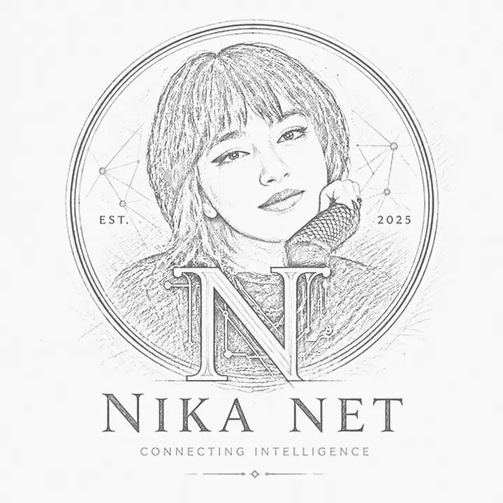
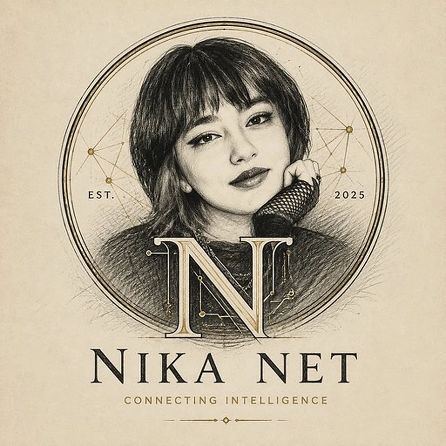
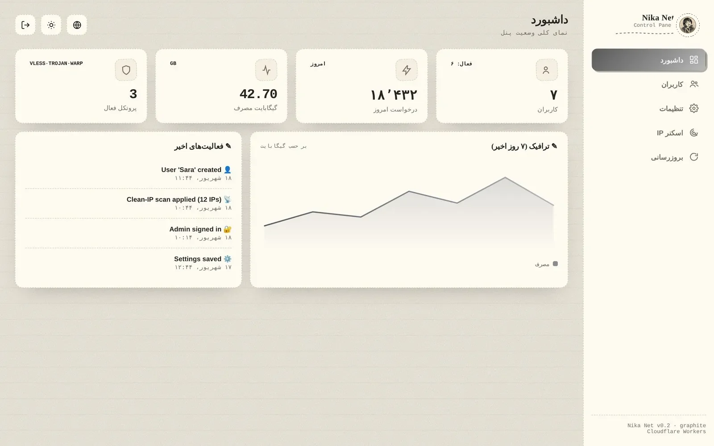
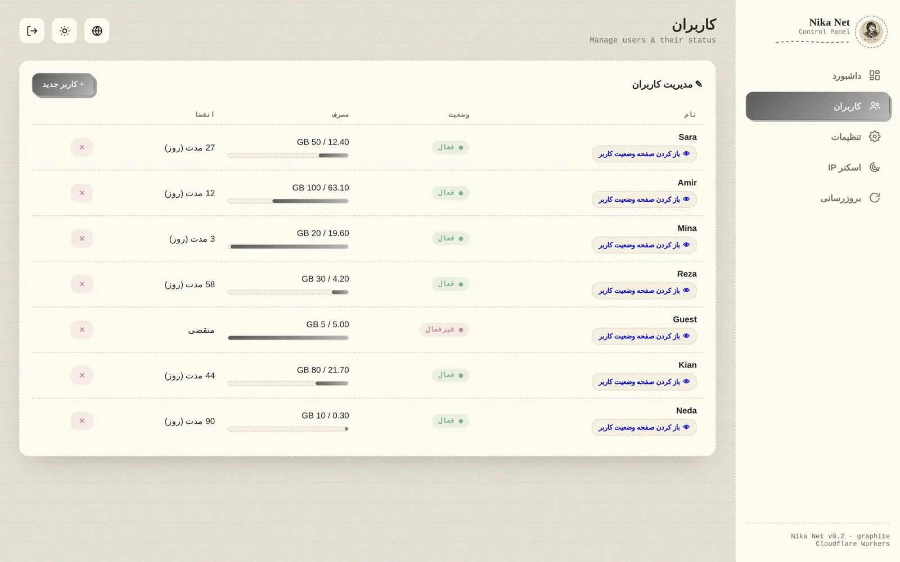
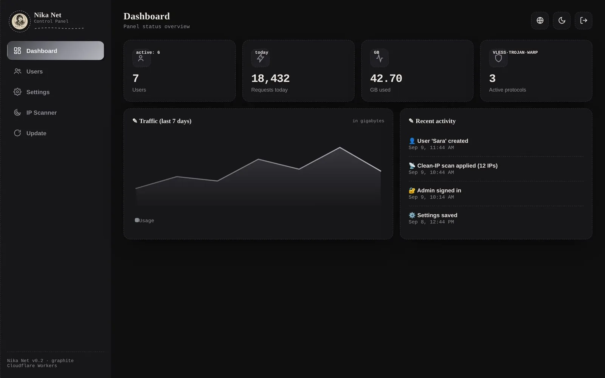
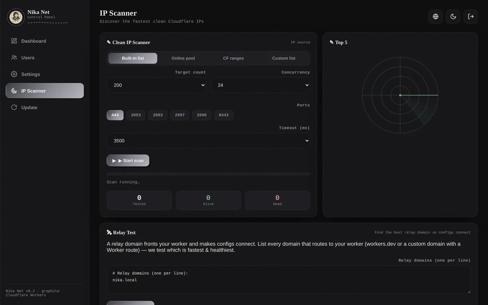
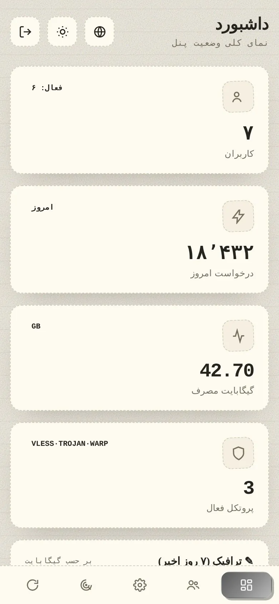
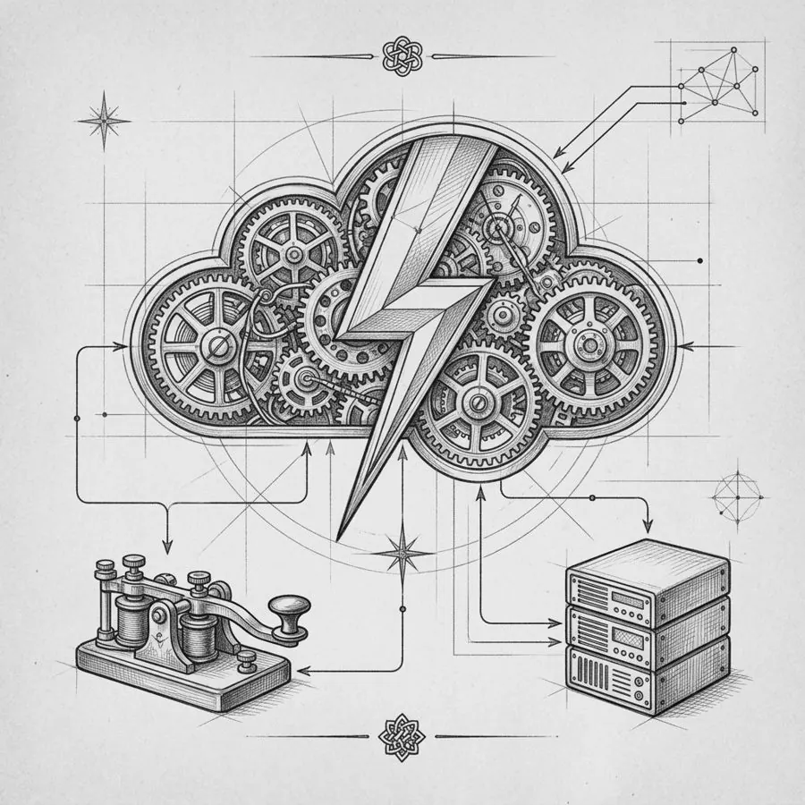

Freedom.
Speed.
Security, your way.
آزادی، سرعت، امنیت — به روش خودت.
پنل پروکسی شخصیات، روی یک Cloudflare Worker رایگان. VLESS، Trojan و WARP — روی حساب خودت، بدون سرور، بدون واسطه، بدون هزینه. با مداد کشیده شده.
Your personal proxy panel on one free Cloudflare Worker. VLESS, Trojan & WARP — your account, no server, no middleman, no bill. Drawn in graphite.


to connection
Take a look inside.
نگاهی به داخل پنل.
اسکرول کن؛ پنل صفحهبهصفحه ورق میخورد.
Scroll — the panel turns page by page.
داشبوردEverything at a glance
DashboardEverything at a glance
کاربران فعال، درخواستهای امروز، مصرف گیگابایت، پروتکلهای روشن و نمودار ترافیک ۷ روز اخیر — همه در یک نگاه، با همان تم گرافیتی.
Active users, today's requests, gigabytes used, live protocols and a 7-day traffic chart — all at a glance, in the same graphite theme.
مدیریت کاربرانQuota · expiry · one private link
UsersQuota · expiry · one private link
برای هر نفر سهمیهی حجم و روز تعیین کن، با یک کلیک فعال/غیرفعال کن و لینک وضعیت خصوصیاش را بفرست.
Set a GB quota and day limit per person, toggle them on/off with a click, and hand them a private status link.
حالت تختهسیاهSame panel, chalk on slate
Chalkboard modeSame panel, chalk on slate
یک کلیک، و کاغذ کاهی به تختهسیاه تبدیل میشود. برای شبها.
One click and the paper turns to slate. For late nights.
رادار IP تمیزProbe · rank · apply
Clean-IP radarProbe · rank · apply
از شبکهی خودت ۴۲۰+ آیپی کلادفلر را تست میکند، بر اساس تأخیر رتبه میدهد و بهترینها را روی همهی کانفیگها مینشاند. تست دامنهی رله هم همینجاست.
Probes 420+ Cloudflare IPs from your own network, ranks by latency and applies the best to every config. Relay-domain testing lives here too.
در جیبFully responsive, thumb-friendly
In your pocketFully responsive, thumb-friendly
همان پنل روی گوشی، با نوار ناوبری پایین و کارتهای بزرگ. نیازی به لپتاپ نیست.
The same panel on a phone, with a bottom nav and big cards. No laptop required.





 fig. 07 — the wire
fig. 07 — the wireTwo wires into the workshop.
دو سیم به کارگاه ما.
یکی برایت پنل میسازد، دیگری تو را در جریان نگه میدارد. هر دو رایگان، هر دو داخل تلگرام.
One builds your panel for you, the other keeps you in the loop. Both free, both inside Telegram.
توکن Cloudflare را بده — یا با لینک آماده بساز — و ربات در چند ثانیه Worker، KV و پنل را برایت مستقر میکند. بدون ترمینال.
Hand it a Cloudflare token — or create one via its ready link — and it deploys the Worker, KV and panel in seconds. No terminal.
شروع با رباتOpen the bot →اعلان نسخههای جدید، آیپیهای تمیز تازه، ترفندهای اتصال و بحث با بقیهی کسانی که پنل خودشان را دارند.
Release notes, fresh clean-IP lists, connection tips and conversation with others who run their own panel.
عضویت در کانالJoin the channel →
More than just a panel.
بیشتر از یک پنل ساده.
هر چیزی که برای ساختن یک گذرگاه شخصی و امن لازم داری — در یک فایل، روی لبهی شبکه.
Everything you need to run a private, secure gateway — in one file, at the edge.
تم گرافیت و کاغذGraphite / Paper theme
Graphite / Paper theme
حس نوستالژیک طراحی دستی: حاشیههای خطچین مدادی، بافت کاغذ، تایپوگرافی سریف و تایپرایتر، حالت روشن و تیره.
A nostalgic hand-drawn aesthetic — dashed pencil borders, paper grain, serif & typewriter typography, dark and light mode.
دوزبانه و راستچینBilingual & RTL
Bilingual & RTL
انگلیسی و فارسی در یک پنل؛ با یک کلیک زبان را عوض کن.
English and Persian in the same panel — switch with a single click.
چندکاربرهMulti-user
Multi-user
سهمیهی حجم (GB)، تاریخ انقضا، فعال/غیرفعال و یک لینک اشتراک خصوصی برای هر کاربر.
Per-user quota (GB), expiry (days), active/inactive, and one private subscription link each.
اسکنر IP تمیزClean-IP scanner
Clean-IP scanner
رادار داخل پنل، بیش از ۴۲۰ آیپی کلادفلر را از شبکهی خودت تست میکند و بهترینها را روی همهی کانفیگها اعمال میکند.
An in-panel radar probes 420+ Cloudflare IPs from your network and applies the best to every config.
خروجی چندفرمتهMulti-format configs
Multi-format configs
Base64 (v2rayNG)، Clash/Mihomo، Sing-box و WireGuard (WARP) — با تقریباً هر کلاینتی سازگار است.
Base64 (v2rayNG), Clash/Mihomo, Sing-box and WireGuard (WARP) — imports into almost any client.
امنیتSecurity
Security
رمز ادمین با SHA-256، نشستهای امضاشده با HMAC، مسیر مخفی ادمین و استتار برای مسیرهای ناشناس.
SHA-256 hashed admin password, HMAC-signed sessions, hidden admin path and camouflage for unknown routes.
Three ways through the wall.
سه راه برای عبور از دیوار.
پروتکل اصلی؛ روی WebSocket + TLS با خروجی cloudflare:sockets. سریع، سبک و سازگار با اکثر کلاینتها.
Primary protocol — over WebSocket + TLS with cloudflare:sockets outbound. Fast, light and widely supported.
پروتکل دوم با پنهانکاری بهتر؛ احراز هویت هدر با SHA-224. برای شرایطی که VLESS شناسایی میشود.
Secondary protocol with better stealth — SHA-224 header auth. For when VLESS gets fingerprinted.
خروجی کانفیگ WireGuard برای تماسهای صوتی/تصویری (UDP) و شرایط بحرانی؛ چون Workers ترافیک UDP را روی VLESS/Trojan حمل نمیکند.
WireGuard config export for voice/video calls (UDP) and critical situations — Workers don't carry UDP over VLESS/Trojan.
How a packet gets through.
یک بسته چطور رد میشود.
نقشهٔ مهندسی مسیر: از دستگاه شما، از دل فیلترینگ، تا لبهٔ Cloudflare و از آنجا به اینترنت آزاد. روی هر ایستگاه بایستید.
The engineering plan of the route: from your device, through the filter, to the Cloudflare edge and out to the open internet. Hover each station.
کلاینت (v2rayNG، Hiddify، Clash…) کانفیگ VLESS/Trojan را میگیرد و ترافیک را داخل یک اتصال WebSocket + TLS میپیچد — از بیرون فقط یک HTTPS معمولی دیده میشود.
Your client (v2rayNG, Hiddify, Clash…) takes the VLESS/Trojan config and wraps traffic inside WebSocket + TLS — from the outside it looks like ordinary HTTPS.
Worker شما در نزدیکترین دیتاسنتر اجرا میشود، بسته را باز میکند و به مقصد وصل میشود. با «آیپی تمیز» به یکی از آدرسهای CF میرسید که فیلتر نشده.
Your Worker runs in the nearest data center, unwraps the packet and connects to the destination. A “clean IP” lands you on a CF address that isn’t blocked.
مقصد فقط Cloudflare را میبیند. نه سروری اجاره کردهاید، نه لاگی جایی ذخیره میشود؛ وقتی نباشید، Worker هم خاموش است. هزینه: صفر.
The destination only sees Cloudflare. No rented server, no logs kept anywhere; when you’re away the Worker is simply idle. Cost: zero.
Runs entirely
at the edge.
کاملاً روی لبهی شبکه اجرا میشود.
بدون VPS، بدون Docker، بدون آپدیت شبانه. Cloudflare Worker خودش مقیاس میگیرد و شما فقط پنل را باز میکنید. اطلاعات در KV یا D1 (هر دو رایگان) ذخیره میشود.
No VPS, no Docker, no midnight updates. The Cloudflare Worker scales itself; you just open the panel. State lives in KV or D1 — both free.
- استقرار تککلیکی یا با Wrangler
- One-click or Wrangler deploy
- ذخیرهسازی: D1 / KV / حافظه
- Persistence: D1 / KV / memory
- استتار مسیرهای ناشناس برای پنهانکاری
- Camouflage on unknown routes

fig. 03 — the edgeFrom idea to connection
in three moves.
از ایده تا اتصال، در سه حرکت.
کلون کن
Clone
مخزن را از GitHub بگیر و وارد پوشه شو.
Grab the repository from GitHub and step inside.
بساز
Build
با npm run build یک فایل واحد dist/worker.js ساخته میشود.
npm run build produces a single deployable dist/worker.js.
مستقر کن
Deploy
با Wrangler دیپلوی کن یا کد را در داشبورد Cloudflare پیست کن. سپس /admin را باز کن و رمز ادمین را بگذار.
Deploy with Wrangler — or paste into the Cloudflare dashboard. Open /admin, set your password, done.
* اختیاری: یک KV namespace با نام NIKA_KV یا دیتابیس D1 با نام NIKA_DB برای ذخیرهسازی دائمی متصل کن.
* Optional: bind a KV namespace as NIKA_KV or a D1 database as NIKA_DB for persistent storage.
# 1. clone git clone https://github.com/NikaTeem/Nika-Net.git cd Nika-Net # 2. install & build npm install npm run build # → dist/worker.js # 3. deploy to Cloudflare npx wrangler login npm run deploy # open https://<your-worker>.workers.dev/admin
Still being drawn.
هنوز داریم میکشیم.
دفترچهٔ کار — آخرین تغییرات مخزن، مستقیم از GitHub. هیچچیز اینجا دستی نوشته نشده.
The workshop ledger — latest commits, pulled straight from GitHub. Nothing here is typed by hand.
Why not a VPS?
چرا VPS نه؟
| Nika Net | VPS + X-UI | سرویس اشتراکی | Shared service | |
|---|---|---|---|---|
| هزینه ماهانه | Monthly cost | $0 | $5–10 | $3–8 |
| سرور اختصاصی خودت | Your own server | ✔ | ✔ | ✕ |
| نگهداری / آپدیت | Maintenance | ✔ صفرzero | ✕ | ✔ |
| IP سوختنی | Burnable IP | ✔ Anycast | ✕ | ✕ |
| چندکاربره + سهمیه | Multi-user + quota | ✔ | ✔ | ✕ |
| متنباز | Open source | ✔ MIT | ✔ | ✕ |
| UDP / تماس | UDP / calls | WARP | ✔ | ? |
The suggestion box.
صندوق انتقادات و پیشنهادات
هر عددی که اینجا میبینی زنده است و از دیتابیس میآید — هیچ نظری از قبل کاشته نشده. انتقاد تند هم قبول است؛ ما با همانها بهتر میشویم.
Every number here is live from the database — nothing is pre-seeded. Harsh critique welcome; that's how we get better.
Asked often.
سؤالهای پرتکرار
واقعاً رایگان است؟Is it really free?
بله. پلن رایگان Cloudflare روزانه ۱۰۰٬۰۰۰ درخواست Worker میدهد که برای استفادهی شخصی و چند کاربر کافی است. دامنهی workers.dev هم رایگان است.
Yes. Cloudflare's free plan gives 100,000 Worker requests per day — plenty for personal use and a handful of users. The workers.dev domain is free too.
ربات تلگرام دقیقاً چه میکند؟What exactly does the Telegram bot do?
ربات @NikaNetLauncher_bot با توکن Cloudflare تو (که فقط دسترسی Workers دارد) یک Worker میسازد، کد Nika Net را در آن میگذارد، KV را متصل میکند و آدرس پنل را برمیگرداند. توکن رمزنگاریشده ذخیره میشود و هر وقت بخواهی میتوانی از داخل Cloudflare باطلش کنی.
@NikaNetLauncher_bot takes your Cloudflare token (Workers scope only), creates a Worker, uploads Nika Net, binds KV and returns your panel URL. The token is stored encrypted and can be revoked from Cloudflare any time.
به دانش فنی نیاز دارم؟Do I need technical skills?
نه چندان. دکمهی «Deploy to Cloudflare» یا ربات Launcher همهچیز را انجام میدهد؛ فقط یک حساب Cloudflare لازم داری.
Not much. The "Deploy to Cloudflare" button or the Launcher bot does everything — you only need a Cloudflare account.
چرا تماس صوتی روی VLESS کار نمیکند؟Why don't voice calls work over VLESS?
Workers ترافیک UDP را حمل نمیکند. برای تماسها از خروجی WARP (WireGuard) استفاده کن که داخل پنل ساخته میشود.
Workers don't carry UDP. Use the WARP (WireGuard) export generated inside the panel for calls.
اطلاعات کاربران کجا ذخیره میشود؟Where is user data stored?
در KV یا D1 حساب خودت. هیچ دادهای به جایی ارسال نمیشود؛ کد متنباز است و میتوانی خودت بررسی کنی.
In the KV or D1 of your own account. Nothing is sent anywhere; the code is open source and auditable.
با چه کلاینتهایی سازگار است؟Which clients are supported?
v2rayNG، Hiddify، Streisand، NekoBox، Clash/Mihomo، Sing-box و WireGuard — لینک اشتراک هر کاربر برای همهی اینها خروجی دارد.
v2rayNG, Hiddify, Streisand, NekoBox, Clash/Mihomo, Sing-box and WireGuard — each subscription link serves all of them.
Deploy your own edge
in the next five minutes.
در پنج دقیقهی آینده، گذرگاه خودت را بساز.
یک حساب رایگان Cloudflare کافی است. نه کارت بانکی، نه سرور، نه دانش خاص.
A free Cloudflare account is all you need. No credit card, no server, no expertise.
"Your domain, your bandwidth, your data.
No shared server. No middleman. No cost."
«دامنهی خودت، پهنای باند خودت، دادههای خودت. بدون سرور مشترک، بدون واسطه، بدون هزینه.»